Promise, Protection, and Prosperity, Arne Wiig, 1999
Comments regarding Protection "from Behind"
4. Iconographical Analyses
…
4.3 Shield in Egyptian Art
…
Pp. 105-108
4.3.1 Motif 1. a—b.
1.a Relief on the right exterior of Tuthmosis IV's war chariot350
. . . Theme: The pharaoh defeats the enemies of Egypt.
1.b. Relief on the left interior of Tuthmosis IV's war chariot351
. . . Theme: The pharaoh subjugates the enemies of Egypt.
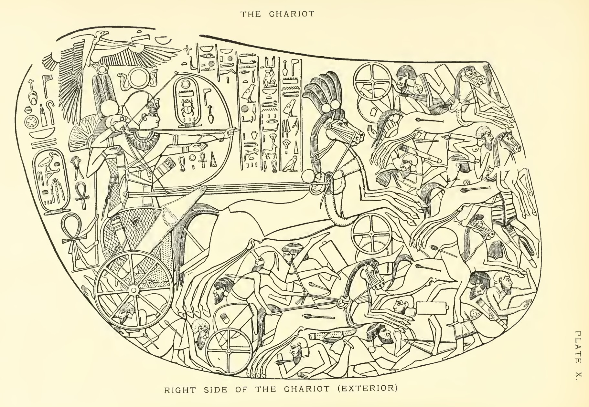
4.3.1.1 Analysis of motifs 1. a—b.
Motif 1.a in the relief on the right exterior of Tuthmosis IV's (1425-1417 BC) war chariot shows a conceptual contradiction, where the pharaoh as the majestic sovereign ruler, stands in stark contrast to the image of the enemies of Egypt, who are struck by the pharaoh's arrows despite numerous shields (fig.26).
The pharaoh's essence here has an omnipotent character, which is revealed in how he manages the reigns of his chariot with his hips while he stands and actively fires his arrows, personally felling his enemies. The pharaoh's divine protection is depicted by several figures behind that of the pharaoh. We can see a visual position metaphor here. Directly behind the pharaoh is the god of war, Monthu, who holds the pharaoh's arms up in battle."352 This motif probably refers to the identification between the pharaoh and the war god.
The fact that the pharaoh is protected from behind is interesting because this type of protection is ever-present in Egyptian art. Motif 1.b. on the left inside of the same chariot shows the pharaoh as a sphinx crushing the enemies of Egypt under its feet (fig.27).
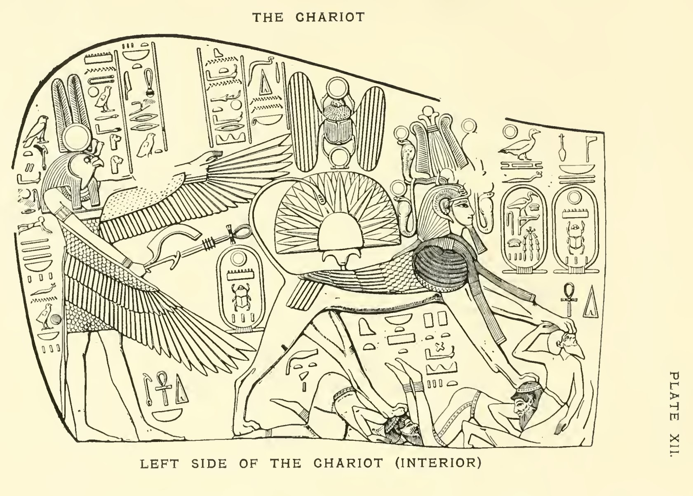
Here, Monthu is shown behind the pharaoh, but now his protection is demonstrated with feather symbolism. Behind Monthu on motif 1.a. is a fan held by a partially anthropomorphic ankh sign. The fan is also included in motif 1.b. over the back of the sphinx. Over the composition on motif 1.a., just behind the god of war, is Nekhbet, the patron goddess of Upper Egypt, whose left wing shelters the pharaoh's back, while the right wing is stretched forward, probably indicating protection extended in that direction.
We can see an obviously conscious contrast between the pharaoh's divine protection and the enemies' reliance on man-made weapons. Monthu's position is also described in the text of Bab el Abd Propylon l. 48.2, where Monthu is described as a protector of the pharaoh: "you fell every warrior around him, you prepare for him a shield on the day of battle, you enclose353 him from behind with your arms in battle." This text was written long after this motif was carved, but the motif of the text is archaic. One of the ideas of the motif may be that the war god "steers" the pharaoh's arrows. It is interesting that the pharaoh is depicted with a concrete offensive weapon while his defense is illustrated symbolically. Presumably, however, contemporaries viewed this symbolic protection as very concrete. We could say that the pharaoh has no defensive weapon, but has offensive/active protection.
The fan is a common symbol of protection and an attribute to the pharaoh, and is connected to the idea of a protective shadow.354 Originally, this symbolism probably arose from the idea of being protected from the heat of the sun, but later expanded to imply general protection, including in battle.355 If we also consider that the ankh, the symbol of life, is bearing the fan, we see a combined symbolism where the pharaoh's protection in the situation implies future life. The main observation is that the pharaoh's "shield" is not a concrete one, but the protection of the god of war and of the other protective symbols. The pharaoh's trust in his divine protection, and the enemies' trust in their man-made weapons, is the primary focus of the protection symbolism in the composition. A general observation is that the composition in motif 1.a. can be divided into two main fields. The field behind/above the pharaoh, which, using value-based perspective, depicts the pharaoh as the divine warrior through the presence of symbols. This field can be said to portray the divine events of the battle. The field under/in front of the pharaoh shows the subjugated enemies with their concrete weapons, but no symbols present. This field can be said to portray the human events in the battle.
…
P 110
4.3.2 Motif . 2: Tutankhamon as Monthu in battle
. . . Theme: The pharaoh's strength is like Monthu's in battle.356
4.3.2.2 Analysis of motif 2

…
The entire composition is dominated by the winged solar disc, which is integrated into the curving upper edge of the shield. Protection metaphors are found behind the pharaoh. On the Neb sign stands the patron goddess of Upper Egypt, Nekhbet, wearing the white crown of Upper Egypt, stretching out her wings in a protective gesture. Nekhbet was believed to aid and protect mothers giving birth.362 Under the goddess of protection and the Neb sign, we see a three-part lotus. Possibly, the goddess of protection, the Neb sign, and the lotus, the hꜣ.f sign, the preposition "behind" are all intended to be read as consecutive hieroglyphs. The combination of the "wing symbol", the protection "from behind", and the pharaoh as a representation of Monthu victorious over the enemies of Egypt on the front of the shield becomes a cluster of symbols of protection. This kind of motif on a shield at all raises the idea that the shield was a significant symbol of divine protection, and was possibly viewed as a necessity for victory and dynastic success.363
----
Pp. 162-166
5. Text Analyses
5.3 The Egyptian Use of the Shield Metaphor
5.3.1 Interpretation of Papyrus Harris pl 22:1-12 - pl 23:1-6
…
5.3.1.2 The text: Papyrus Harris pl 22:1-12 - pl 23:1-6529
Pl 22:1-12: "…
Make him divine (7) more than any king, and great like thy reverence, as lord of the Nine Bows. Make his body to flourish and be youthful daily, while thou art a shield behind him (8) for every day.
…"
5.3.1.3 Interpretation of Papyrus Harris pl 22:1-12 - pl 23:1-6
…
Thus far, we can observe a central theme: Confidence in the god as a requirement for continued existence and ruling power. This applies both personally, for the ruling pharaoh, and dynastically, for coming rulers of the same lineage. Pl 22:7 contains the shield metaphor: "thou art a shield behind him." Here, the metaphor is combined with a characteristic Egyptian positional metaphor placing the shield behind the pharaoh. Protection related to this type of positional metaphor seems to have been central for a long time, from the Old Kingdom to the Ptolemaic period.
Rich iconographical material shows how protection "from behind" was perceived concretely. A good example of this from the Old Kingdom is the depiction of pharaoh Chephren, where Horus in the form of a falcon protects the pharaoh from behind (fig.42).535
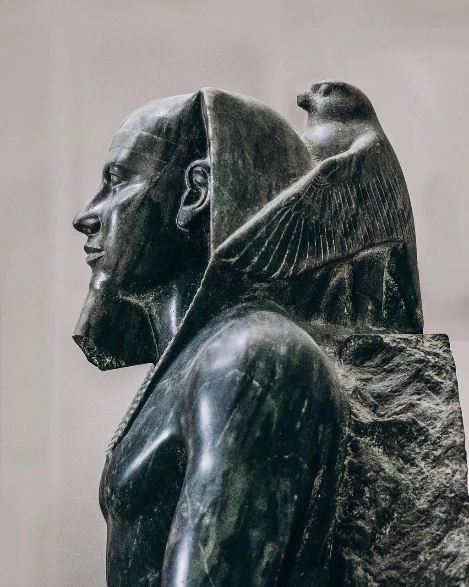
In the Ptolemaic period, we see the combination of shield and protection from behind in Bab el Abd I 48.2536: "you prepare for him a shield on the day of battle, you enclose him from behind with your arms in battle."537 Gods of protection are also portrayed in other positions than behind, but in such a way that the god in the rear is shown as a mirror image of himself.538 Perhaps protection "from behind" can be explained from the "ambush" perspective. Depictions of soldiers on war chariots where the driver is completely unable to watch his own back without the aid of his shield bearer can exemplify the necessity of satisfactory protection from behind. This protection is also shown visually, where Monthu stands on the pharaoh's war chariot.539 One of the motifs on Tutankhamon's ceremonial shields shows the pharaoh in the form of a sphinx, defeating his enemies while receiving divine protection from behind (fig.29).540 A central focus of this scene is the fan over the pharaoh's lion body. This composition unites the three primary protection metaphors in Egypt: the shield, the fan (i.e. shadow), and wings. With this as a visual background, we can note that the description after the shield metaphor in pl 22:8 forms an intratextual line of demarcation between the idea of dynastic success in general (pl 22: 1—7) and the more specific idea of military victories, terror, and the expansion of Egypt's territories (pl 22:8—11a).
…
Pp. 167-170
5.3.2. Interpretation of: Bab el Abd I. Propylon 48.2 543
5.3.2.1 Introduction
An inscription from the Ptolemaic period on a grand propylon in connection to the war god Monthu's temple complex in Karnak contains a hymn of praise where the shield metaphor is used in close connection to a positional metaphor.544
…
5.3.2.2 The text: Bab el Abd I. Propylon 48.2 546
…
1. Monthu-Re; lord of Thebes; lord of strength
…
10. As for the king of Upper and Lower Egypt,
…
18. You fell every warrior around him,
19. You prepare for him a shield on the day of battle,
20. You enclose547 him from behind548 with your arms in battle."
5.3.2.3 Interpretation of: Bab el Abd I. Propylon 48.2
…
From (18—19), the perspective shifts again and the hymn returns to focus on Monthu's own activity. The war god's offensive side is emphasized as he fells every warrior in the pharaoh's proximity. This is a textual equivalent to iconographical depictions of enemies being literally trampled under the feet of the victors (18). This perspective also reflects the defensive, protective sides of Monthu. The description is concrete, and the word "shield" (ikm) refers to a material shield. This means that the text is not expressing a general, abstract divine protection. which is foreign to the Egyptian context. Monthu's action is described in realistic terms where the war god serves as the pharaoh's "bodyguard," actively covering the pharaoh against the enemies' attacks. (19).
From this concrete perspective, the expression of the protective metaphor shifts. The final words (20) about protection "from behind," or "behind the head," refer to archaic patterns and seem to indicate not only temporary protection in a specific crisis, but connote the son-of-god relationship, which is also expressed in the words (12) "Ptolemaios Ill Euergetes, [he is] your son."551 This confirms the idea of dynastic protection of the pharaoh's in general."552 A reference to this interpretation is the frequent descriptions and depictions of the pharaoh as protected from behind. This expression most likely originates from completely practical situations, where a soldier's back and the back of his head were particularly vulnerable. The shield bearer who protected "from behind" was a vital link in the chain of battle tasks that could lead to victory.
…
If the pharaoh is the ruler over both the individual situation and the general situation through his identification with the gods, the phrase "you enclose him from behind" (sbḫ.k hꜣ.f) provides a connotative link between two association fields in the protective metaphor: a concrete human perspective—the "shield" in the current battle situation — and a more all-encompassing "dynastic" perspective that embraces the entire office of the pharaoh. Iconographical concepts, such as depictions of Monthu's protection of the pharaoh on the war chariot (fig.26), or Horus as a falcon protecting the pharaoh behind his head (fig.42), indicate that the relationship between the patron god and the pharaoh was thought of in purely concrete terms. Either way, I propose that the metaphor of the "shield" in the Monthu hymn is inserted in a metaphorical system where several metaphorical motifs and expressions supplement each other so intimately that they become part of a synthetic relationship where neither can be conceived of without the other.
---
7. Concluding Remarks
P. 251
Analyses of the Egyptian shield showed in particular that protection "behind" the pharaoh "as with a shield" related to well-known iconographical motifs where the god encloses the pharaoh in his wings "from behind." This usage can be classified in the metaphorical category I call positional metaphor. Even metaphorical expressions using the phrases "around" and "by someone's side" refer to actual visual protection formations that are used metaphorically.
Footnotes
350 Carter/Newberry (1904 pl X). For a description of the entire war chariot of Thuthmosis IV, see Carter/Newberry (1904 pl Xff).
351 Carter/Newberry (1904 pl XII).
352 Compare Ps 89:(22-23): "(22) my hand shall always remain with him; my arm also shall strengthen him. (23) The enemy shall not outwit him, the wicked shall not humble him. See Also Keel (1972:243, 247)
353 See Sethe (1957 VIII 35.48.2). "Surrounds" alternative: "protect as with a shield". See Erman/Grapow (1955:91); Černý (1976:148). See this study's interpretation of this text.
354 See Jackson (1995:280).
355 See Grapow (1924:46—46).
356 Ibid.
…
362 This connection between the goddess of protection watching over births and battles will be discussed later under the heading "Parallel metaphorical motifs" (below)
363 Carter (1933:143)
---
535 Protection is portrayed here by the wings of the falcon god surrounding the pharaoh's head from behind the neck, so that the outer feathers touch the forward outer edge of the pharaoh's headpiece. See the frontispiece of Frankfort (1978); See also Keel (1972:170).
536 See section "Interpretation of Bab el Abd I. Propylon 48.2" (below).
537 Sethe (1957:Vlll 35:48.2).
538 Desroches-Noblecourt (1963:81. pl XVII).
359 See Carter/Newberry (1904 pl X) for example.
540 See Carter (1933:142-143 pl XLVII ).
…
543 This designation, used by Sethe (1957: VIII:35 48.2), is a specification of the designation theb Temp Zeit 48,2, which is used by Erman/Grapow (1958:25 I Seite 139:15) and is used in this study under the list of shield words. The text here was translated at my request by Doctor Beate George, 1st curator of the Museum of Mediterranean and Near Eastern Antiquities in Stockholm in October 1997.
544 LÄ IV 2:200-204
…
546 The line numbers in this text are inserted to facilitate my interpretation.
547 or "protect as with a shield". See Erman/Grapow (1955:91); Černý (1976:148).
548 or "behind the head."
…
551 See Assman (182:13-16); (1984:141 ff)
552 LÄ VI 7:1047ff.
Some additional images of Horus "behind" pharaoh:
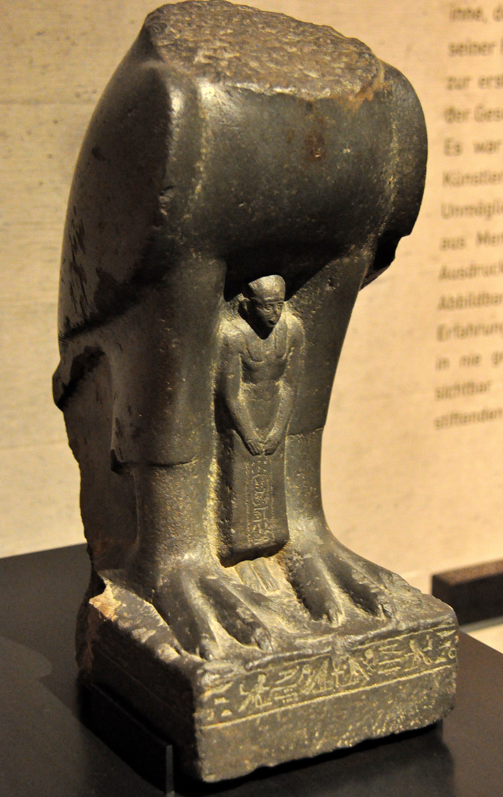
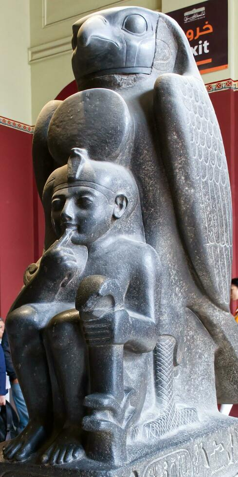
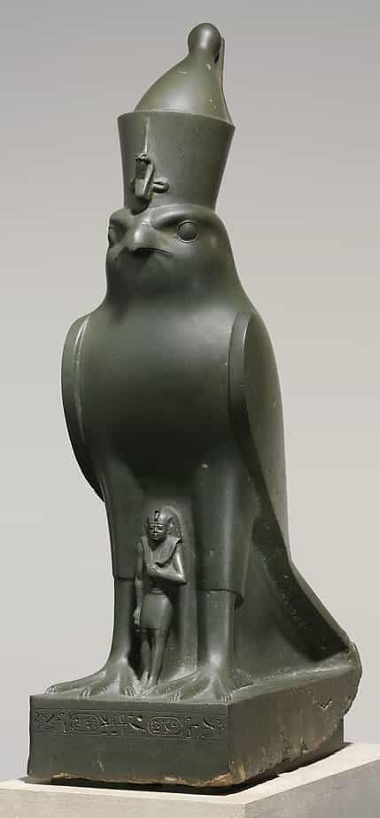
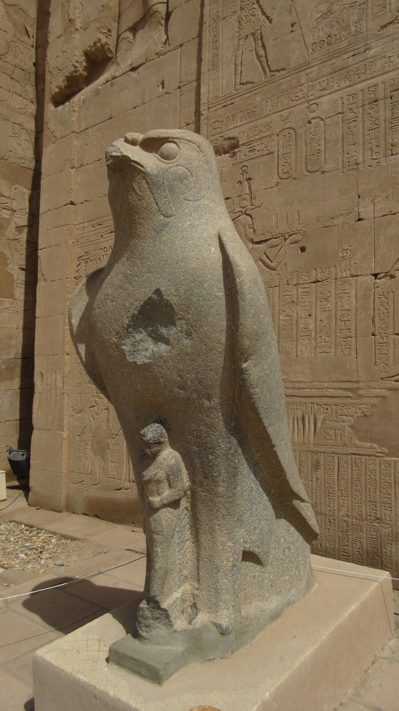
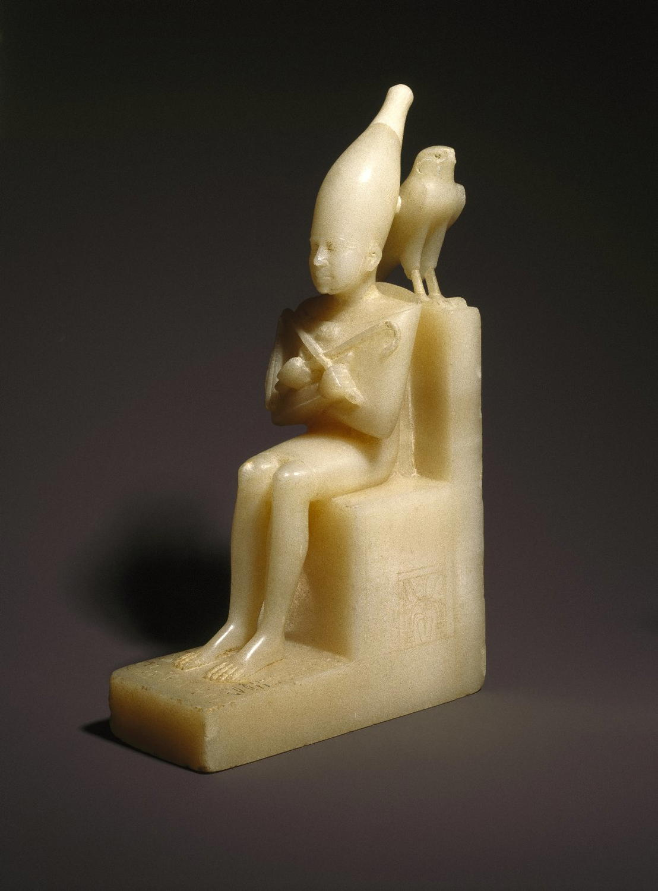
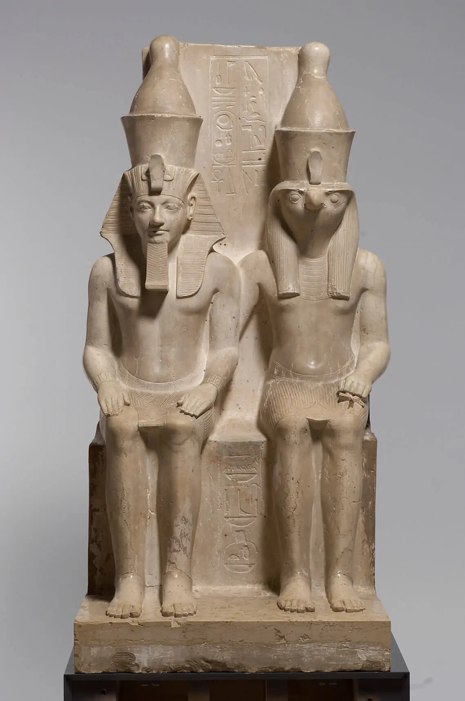
Images of Amon(-Ra) "behind" pharaoh:

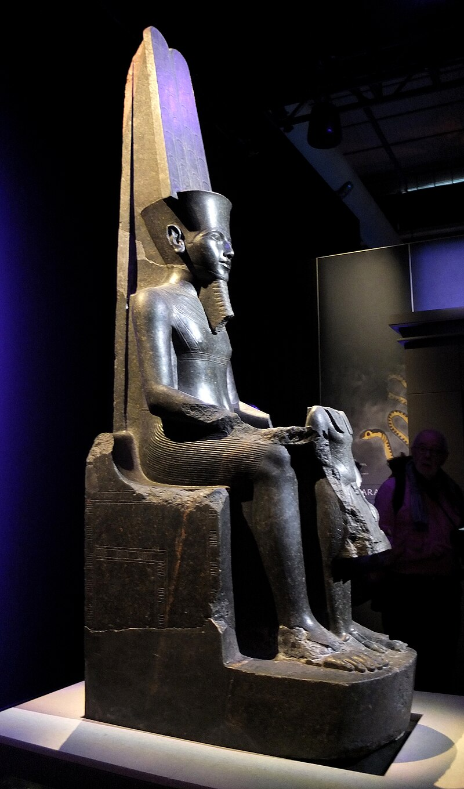
Images of Thoth "behind" the scribe:
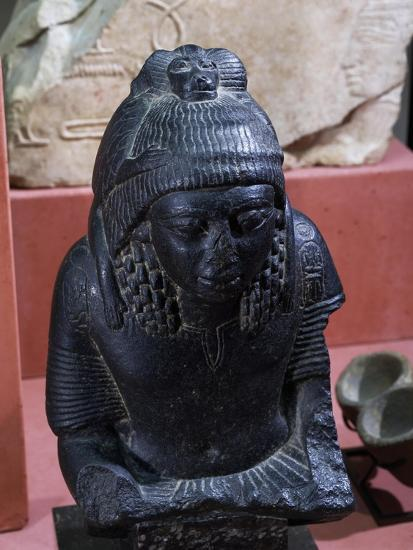
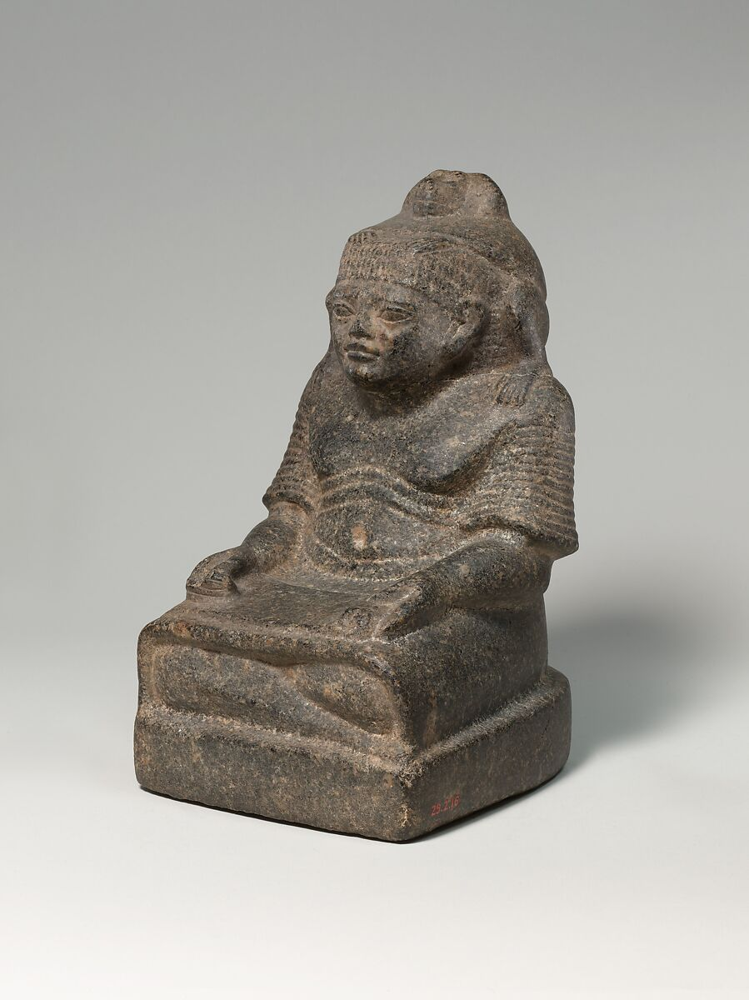
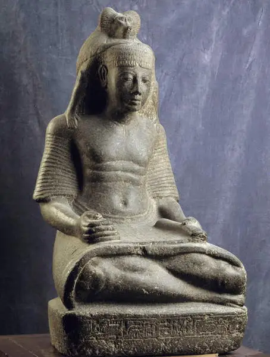